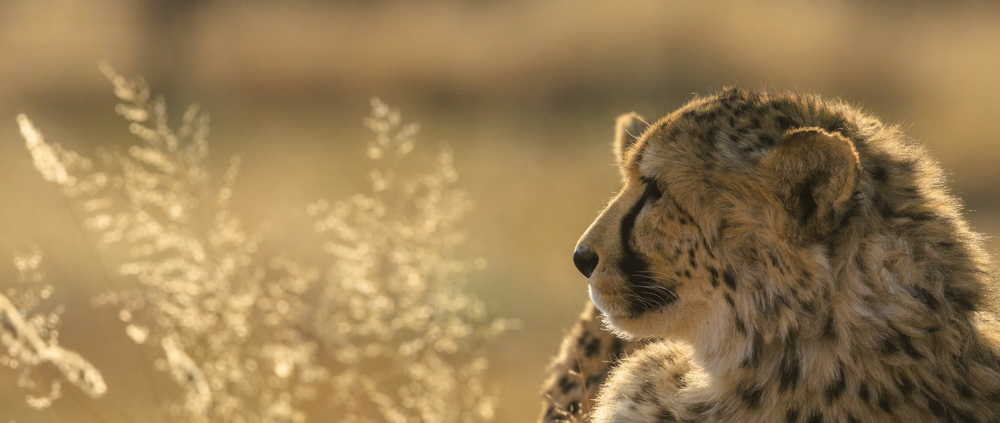

¿Qué es el guepardo del Sáhara?
El guepardo del Sáhara es una subespecie extremadamente rara que habita en las zonas más áridas del desierto del Sáhara. Está adaptado a condiciones extremas de calor y escasez de agua.

El guepardo del Sáhara es una subespecie extremadamente rara que habita en las zonas más áridas del desierto del Sáhara. Está adaptado a condiciones extremas de calor y escasez de agua.
Vive en regiones desérticas y semidesérticas del norte de África, recorriendo grandes distancias en busca de alimento.